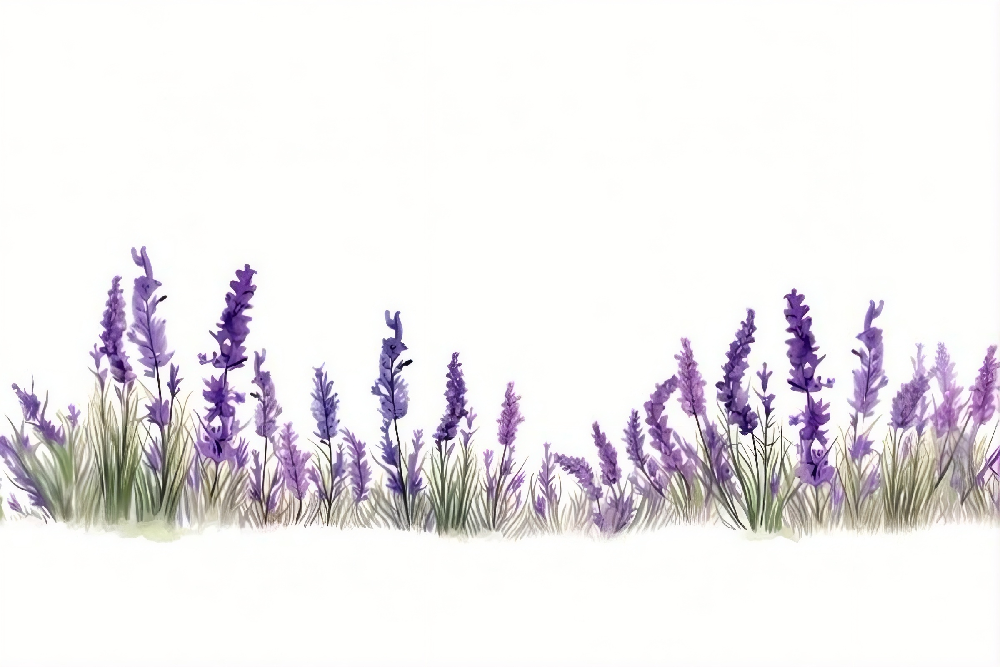
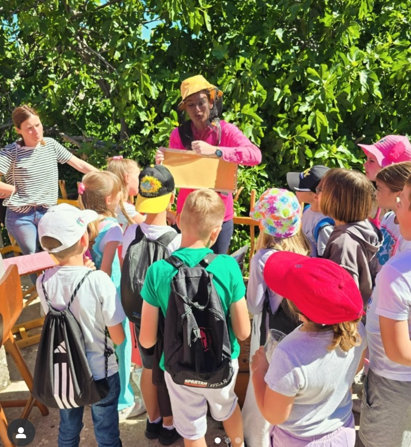
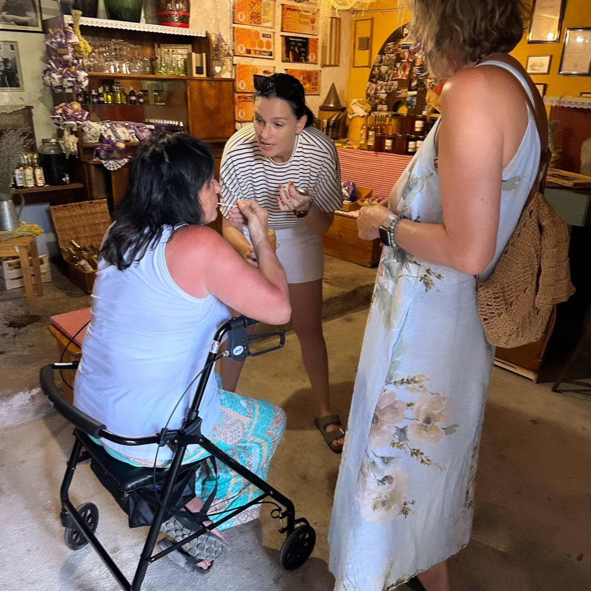

Tura puna ukusa, mirisa i emocija
Šta vas očekuje tokom „Taste of Island“ doživljaja?

👨👩👧👦 Tura prilagođena porodicama i deci
Naša tura može biti edukativna i zabavna za najmlađe. Deca imaju priliku da upoznaju svet pčela, saća i meda kroz jednostavna objašnjenja, pitanja i praktične prikaze. Tempo obilaska prilagođavamo porodicama — bez žurbe, sa pauzama, fotografisanjem i prostorom za radoznalost. Ako dolazite sa decom, samo nam to naglasite — osmislimo iskustvo koje će im ostati u sećanju.

👥 Za veće grupe — po dogovoru
Standardno radimo privatne ture za do 8 osoba, kako bismo zadržali intimnu i toplu atmosferu. Međutim, po prethodnom dogovoru možemo organizovati i ture za veće grupe — porodice, prijatelje, tim building, posebne događaje. Organizacija, dinamika i degustacije prilagođavaju se broju gostiju, tako da iskustvo ostane kvalitetno i prijatno za sve

♿ Pristupačno i prilagođeno
Tura se može prilagoditi osobama sa smanjenom pokretljivošću ili posebnim potrebama. Ukoliko je potrebno sporije kretanje, dodatne pauze, drugačiji pristup degustaciji ili logistička prilagođavanja — unapred nas obavestite. Naš cilj je da se svako oseća dobrodošlo, bez stresa i nelagodnosti. Autentičnost je važna, ali još važnije je da se svako oseća kao gost — a ne kao izuzetak.